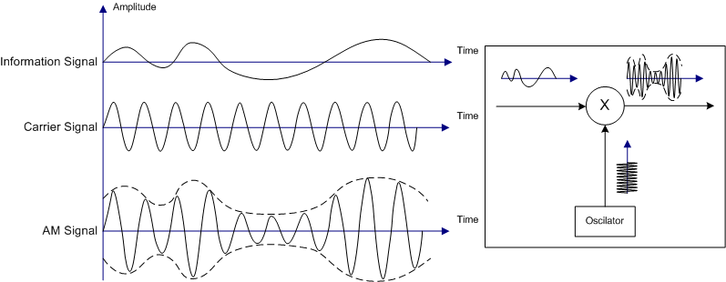
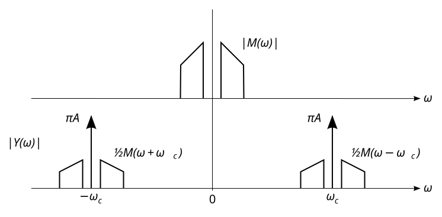
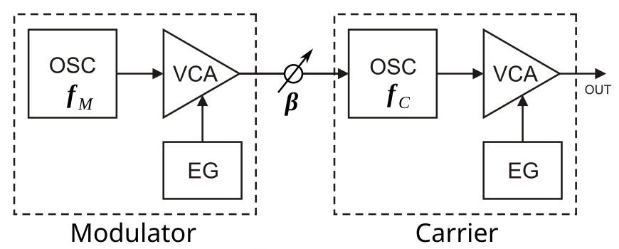

Audio Processing Basics I slide version
This lecture and the following one present a selection of audio processing and synthesis algorithms. It is in no way comprehensive: the goal is just to give you a sense of what's out there.
All these algorithms have been extensively used during the second half of the twentieth century by musicians and artists, especially within the computer music community.
White Noise
White noise is a specific kind of signal in which there's an infinite number of harmonics all having the same level. In other words, the spectrum of white noise looks completely flat.
White noise is produced by generating random numbers between -1 and 1. Noise.cpp demonstrates how this can be done in C++ using the rand() function:
Noise::Noise() :
randDiv(1.0/RAND_MAX){}
float Noise::tick(){
return rand()*randDiv*2 - 1;
}
The Simple Filter: One Zero section presents a use example of white noise.
Wave Shape Synthesis
Wave Shape synthesis is one of the most basic sound synthesis technique. It consists of using oscillators producing waveforms of different shapes to generate sound. The most standard wave shapes are:
{kind=link}
The crazy-sine example can be considered as "wave shape synthesis" in that regard.
The crazy-saw example is very similar to crazy-sine, but it's based on a sawtooth wave instead. The sawtooth wave is created by using a phasor object. Just as a reminder, a phasor produces a signals tamping from 0 to 1 at a given frequency, it can therefore be seen as a sawtooth wave. Since the range of oscillators must be bounded between -1 and 1, we adjusts the output of the phasor such that:
float currentSample = sawtooth.tick()*2 - 1;
Feel free to try the crazy-saw example at this point.
Amplitude Modulation (AM) Synthesis
Amplitude modulation synthesis consists of modulating the amplitude of a signal with another one. Sine waves are typically used for that:

{kind=link}
When the frequency of the modulator is low (bellow 20Hz), our ear is able to distinguish each independent "beat," creating a tremolo effect. However, above 20Hz two side bands (if sine waves are used) start appearing following this rule:

{kind=link}
The mathematical proof of this can be found on Julius Smith's website.
Am.cpp implements a sinusoidal amplitude modulation synthesizer:
float Am::tick(){
int cIndex = cPhasor.tick()*SINE_TABLE_SIZE;
int mIndex = mPhasor.tick()*SINE_TABLE_SIZE;
float posMod = sineTable.tick(mIndex)*0.5 + 0.5;
return sineTable.tick(cIndex)*(1 - posMod*modIndex)*gain;
}
Note that phasors are used instead of "complete" sine wave oscillators to save the memory of an extra sine wave table. The range of the modulating oscillator is adjusted to be {0,1} instead of {-1,1}.
The amplitude parameter of the modulating oscillator is called the index of modulation and its frequency, the frequency of modulation.
In practice, the same result could be achieved using additive synthesis and three sine wave oscillators but AM allows us to save one oscillator. Also, AM is usually used an audio effect and modulation is applied to an input signal in that case instead of a sine wave. Sidebands will then be produced for each harmonic of the processed sound.
The am example demonstrates a use case of an AM synthesizer. Use the Rec and Mode button to cycle through the parameters of the synth and change their value.
Frequency Modulation (FM) Synthesis
Frequency modulation synthesis consists of modulating the frequency of an oscillator with another one:

which mathematically can be expressed as:
where denotes the carrier and , the modulator.
As for AM, the frequency of the modulating oscillator is called the frequency of modulation and the amplitude of the modulating oscillator, the index of modulation. Unlike AM, the value of the index of modulation can exceed 1 which will increase the number of sidebands. FM is not limited to two sidebands and can have an infinite number of sidebands depending on the value of the index. The mathematical rational behind this can be found on Julius Smith's website.
fm.cpp provides a simple example of how an FM synthesizer can be implemented:
float Fm::tick(){
int mIndex = mPhasor.tick()*SINE_TABLE_SIZE;
float modulator = sineTable.tick(mIndex);
cPhasor.setFrequency(cFreq + modulator*modIndex);
int cIndex = cPhasor.tick()*SINE_TABLE_SIZE;
return sineTable.tick(cIndex)*gain;
}
Note that as for the AM example, we're saving an extra sine wave table by using the same one for both oscillators.
The examples folder of the course repository hosts a simple Teensy program illustrating the use of FM. Use the Rec and Mode button to cycle through the parameters of the synth and change their value.
FM synthesis was discovered in the late 1960s by John Chowning at Stanford University in California. He's now considered as one of the funding fathers of music technology and computer music. FM completely revolutionized the world of music in the 1980s by allowing Yamaha to produce the first commercial digital synthesizers: the DX7 which met a huge success. FM synthesis is the second most profitable patent that Stanford ever had.
Simple Filter: One Zero
Filters are heavily used in the field of audio processing. In fact, designing filters is a whole field by itself. They are at the basis of many audio effects such as Wah guitar pedals, etc. From an algorithmic standpoint, the most basic filter is what we call a "one zero" filter which means that its transfer function only has numerators and no denominators. The differential equation of a one zero filter can be expressed as:
where is "the zero" of the filter (also called feed forward coefficient), can be discarded as it is equal to 1 in most cases.
One zero filters can either be used as a lowpass if the value of is positive or as a highpass if is negative. The frequency response of the filter which is be obtained with can be visualized on Julius Smith's website.
Note that the gain of the signal is amplified on the second half of the spectrum which needs to be taken into account if this filter is used to process audio (once again, the output signal must be bounded within {-1,1}).
OneZero.cpp implements a one zero filter:
float OneZero::tick(float input){
float output = input + del*b1;
del = input;
return output*0.5;
}
Note that we multiply the output by 0.5 to normalize the output gain.
The filtered-noise example program for the Teensy demonstrates the use of OneZero.cpp by feeding white noise in it. The value of can be changed by pressing the "Mode" button on the board, give it a try!
Exercises
LFO: Low Frequency Oscillator
An LFO is an oscillator whose frequency is below the human hearing range (20 Hz). LFOs are typically used to create vibrato. In that case, the frequency of the LFO is usually set to 6 Hz.
Modify the crazy-saw example so that notes are played slower (1 per second) and that some vibrato is added to the generated sound.
Solution:
In MyDsp.h:
#include "Sine.h"
...
private:
float freq;
Phasor sawtooth;
Echo echo;
Sine LFO;
};
In MyDsp.cpp:
MyDsp::MyDsp() :
...
freq(440),
sawtooth(AUDIO_SAMPLE_RATE_EXACT),
echo(AUDIO_SAMPLE_RATE_EXACT,10000),
LFO(AUDIO_SAMPLE_RATE_EXACT)
{
...
// setting up DSP objects
echo.setDel(10000);
echo.setFeedback(0.5);
LFO.setFrequency(6);
}
...
// set sine wave frequency
void MyDsp::setFreq(float f){
freq = f;
}
...
for (int i = 0; i < AUDIO_BLOCK_SAMPLES; i++) {
// DSP
sawtooth.setFrequency(freq*(1 + LFO.tick()*0.1));
float currentSample = echo.tick(sawtooth.tick()*2 - 1)*0.5;
Towards the DX7
The DX7 carried out frequency modulation over a total of six oscillators that could be patched in different ways. So FM is not limited to two oscillators... Try to implement an FM synthesizer involving 3 oscillators instead of one. They should be connected in series: 3 -> 2 -> 1.
{kind=link}
Solution:
(non-exhaustive)
In Fm.cpp:
float Fm::tick(){
int m0Index = m0Phasor.tick()*SINE_TABLE_SIZE;
float modulator0 = sineTable.tick(m0Index);
modulator1.setFrequency(m1Freq + modulator0*mod0Index);
int m1Index = m1Phasor.tick()*SINE_TABLE_SIZE;
float modulator1 = sineTable.tick(m1Index);
cPhasor.setFrequency(cFreq + modulator1*mod1Index);
int cIndex = cPhasor.tick()*SINE_TABLE_SIZE;
return sineTable.tick(cIndex)*gain;
}
And more exhaustive solution is provided in fm3 here.
Smoothing
In most cases, DSP parameters are executed at control rate. Moreover, the resolution of the value used to configure parameters is much lower than that of audio samples since it might come from a Graphical User Interface (GUI), a low resolution sensor ADC (e.g., arduino), etc. For all these reasons, changing the value of a DSP parameter will often result in a "click"/discontinuity. A common way to prevent this from happening is to interpolate between the values of the parameter using a "leaky integrator." In signal processing, this can be easily implemented using a normalized one pole lowpass filter:
where is the value of the pole and is typically set to 0.999 for optimal results.
Modify the crazy-saw example by "smoothing" the value of the frequency parameter by implementing the filter above with . Then slow down the rate at which frequency is being changed so that only two new values are generated per second. The result should sound quite funny :).
Solution:
In addition to Smooth.cpp and Smooth.h, in Phasor.h:
int samplingRate;
Smooth smooth;
};
and Phasor.cpp:
float Phasor::tick(){
float currentSample = phasor;
phasor += smooth.tick(phasorDelta);
phasor = phasor - std::floor(phasor);
return currentSample;
}
Smoothing Potentiometer Values
Try to use the smoothing function that you implemented in the previous step to smooth sensor values coming from a potential potentiometer controlling some parameter of one of the Teensy examples. The main idea is to get rid of sound artifacts when making abrupt changes in potentiometers.